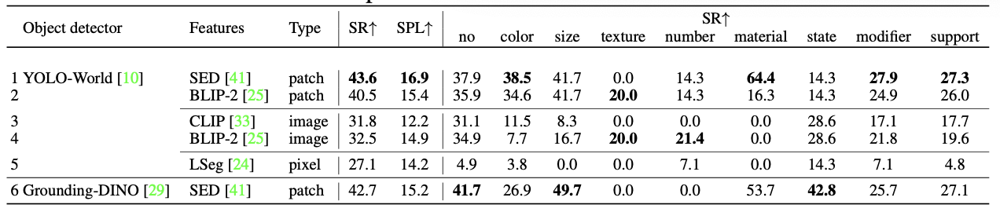
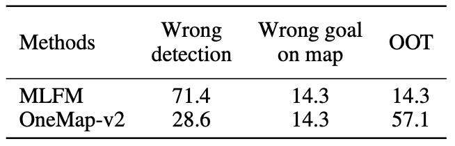

Abstract
Recent progress in large vision language models has driven improvements in language based semantic navigation, where an embodied agent must reach a target object described in natural language. Yet a clear, language focused benchmark for testing how well such agents ground the words in their instructions was missing. LangNavBench fills this gap by pairing a carefully curated open set dataset, LangNav, with an evaluation suite that probes grounding across attributes, spatial relations and category hierarchies. We further introduce Multi Layered Feature Map (MLFM), a queryable semantic map that enables strong zero shot performance and outperforms state of the art mapping baselines.
Dataset: LangNav

To implement LangNavBench, we introduce a new dataset, LangNav, where the goal objects are specified using language descriptions. Each episode contains three goals, disclosed to the agent one at a time rather than all at once. Revealing every target at the start would let the agent approach each object the moment it first appears, undermining our aim of testing how well it stores and reuses information gathered during exploration. The descriptions can detail an object with various amounts of specificity, for example 'Go to the couch' vs 'Go to the black couch' vs 'Go to the black three piece L-shaped sectional couch'. This allows us to evaluate the agent's capability to identify objects specified without any attribute as well as those specified by one or more attributes.
Approach: MLFM
MLFM builds a multi layer top down semantic map that preserves vertical context without cubic memory cost. Each layer encodes CLIP features; goal descriptions are embedded once, then slide as convolutional kernels over the map to produce a similarity heat map. An Explore and Exploit policy leverages the heat map to decide between frontier exploration or directed navigation.
Results
MLFM attains 59% SR plus thirty points over OneMap and bridges half the gap to oracle map agents, while requiring no training in LangNav environments.
Error Modes
Failures stem mostly from truncated exploration budgets or ambiguous language descriptions. Increasing map resolution and disambiguation queries are promising directions.
Citation
@misc{raychaudhuri2025langnavbench,
title={LangNavBench: Evaluation of Natural Language Understanding in Semantic Navigation},
author={Sonia Raychaudhuri and Enrico Cancelli and Tommaso Campari and Lamberto Ballan and Manolis Savva and Angel X. Chang},
year={2025},
eprint={2507.07299},
archivePrefix={arXiv},
primaryClass={cs.RO},
url={https://arxiv.org/abs/2507.07299},
}
Acknowledgements
The members at SFU were supported by Canada CIFAR AI Chair and Canada Research Chair grants. Experiments at SFU were enabled by WestGrid and Compute Canada. TC was supported by the PNRR project Future AI Research (FAIR PE00000013). We thank the LangNav community beta testers for early feedback.